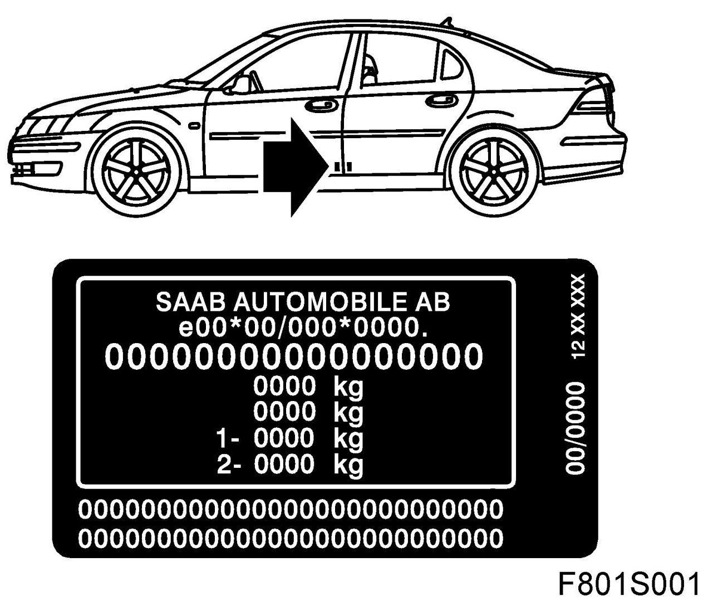
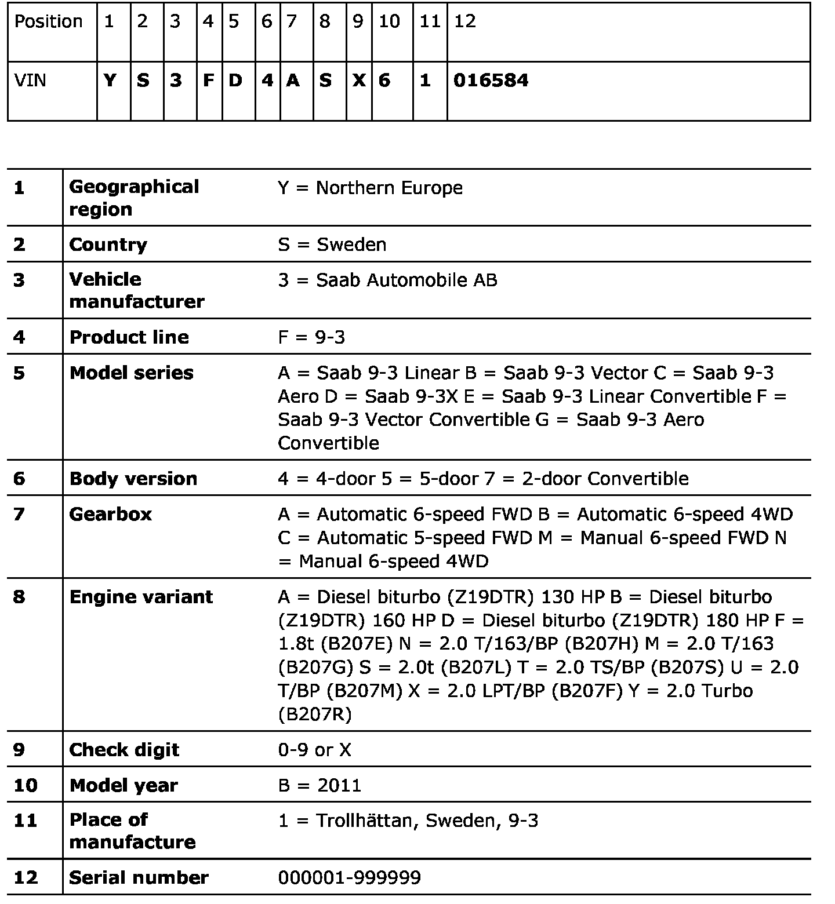

VIN (Vehicle Identification Number)
VIN (Vehicle Identification Number)


Replacing VIN plate
If the chassis label is destroyed in an accident or during repair of an accident-damaged vehicle, the workshop orders a replacement label via First Line Support (FLS) for each individual market.
Address:
Saab Automobile AB
Att: Customer Care
SE-611 81 Nyk�ping
SWEDEN
Only authorized Saab garages can obtain replacement labels. This is so that Saab Automobile AB does not participate in providing a stolen car with a new identity.